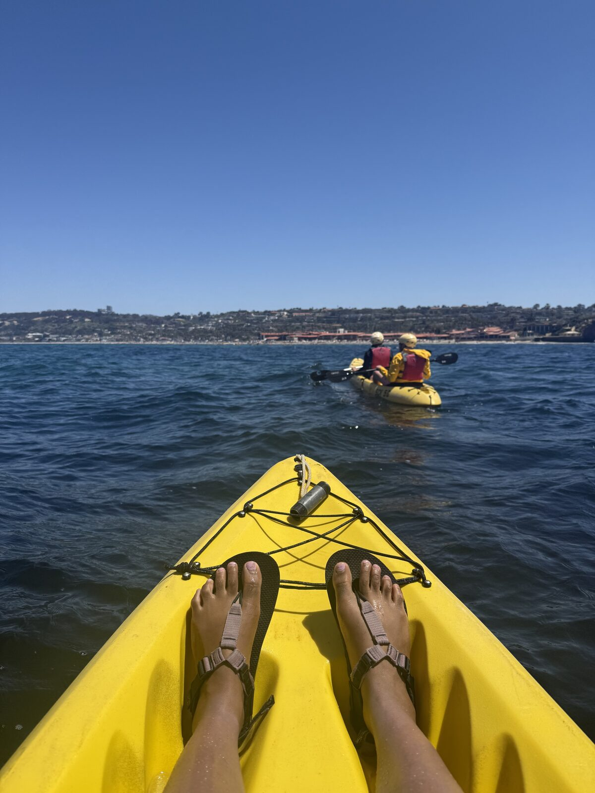
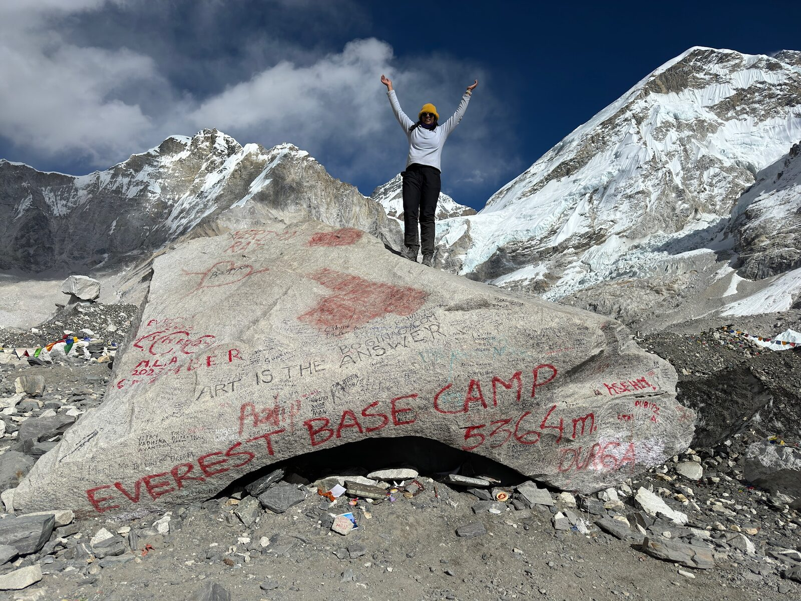
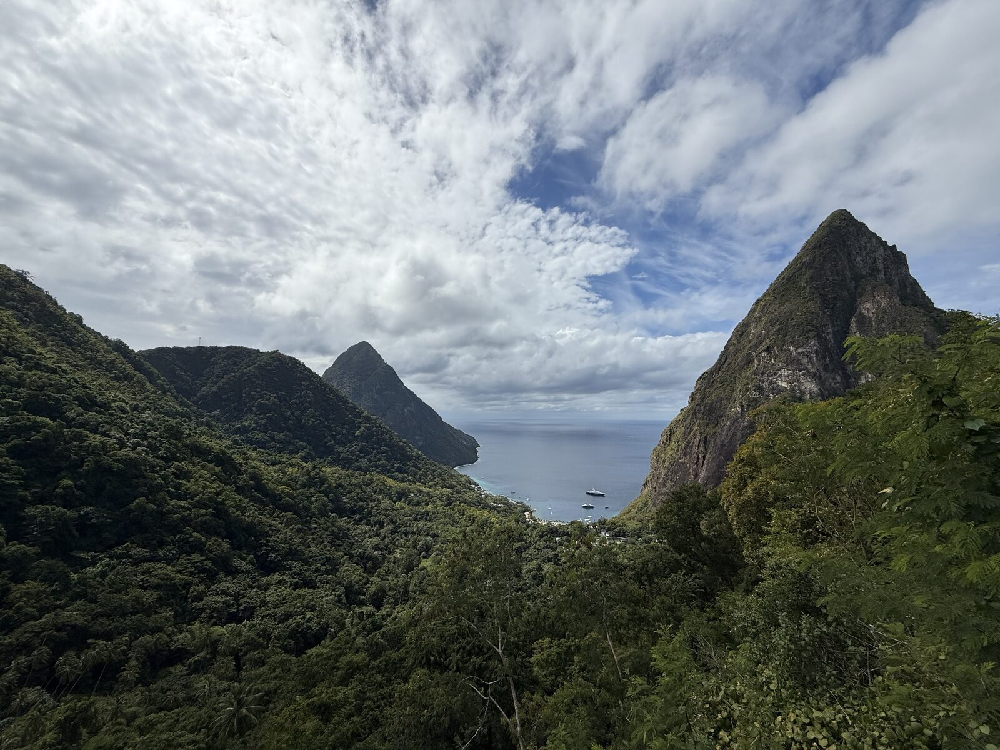

Trips & itineraries
My favorite hobby. Each trip links to its own page with a day-by-day itinerary, food and lodging picks, and a photo gallery — handy for me to remember, and maybe useful if you're planning the same route.
Scroll or pinch to zoom, drag to pan, click a solid pin to open the trip.

San Diego
A relaxed coastal weekend in San Diego mixing iconic attractions, oceanfront walks, and water sports. Highlights include La Jolla Cove, Balboa Park, and sunsets over the Pacific.
California, USA · Long weekend
Everest Base Camp Trek
A classic 12-day trek through Nepal's Khumbu region to Everest Base Camp (5,364m) and Kala Patthar (5,550m), with a scenic helicopter return. The route passes Sherpa villages, monasteries, and dramatic Himalayan peaks.
Khumbu Region, Nepal · 12 days
Hawaii: Big Island & Maui
An eight-day island-hopping trip splitting time between the Big Island and Maui — volcanoes, waterfalls, black- and green-sand beaches, snorkeling, and the Road to Hana.
Hawaii, USA · 8 days
Lassen Volcanic National Park
A summer car-camping weekend at Lassen Volcanic National Park, basing at Summit Lake and mixing easy lakeside loops with a strenuous summit of Lassen Peak.
California, USA · 3 days, campingLost Coast Trail
A rugged 3-day backpacking trip along the Lost Coast Trail in the King Range, hiking roughly 24 miles point-to-point from Mattole Beach to Black Sands Beach, where tide timing is critical.
King Range, Northern California, USA · 4 days backpacking
Glacier National Park
A late-September trip to Glacier National Park based out of Kalispell and Whitefish, packed with alpine day hikes, the Going-to-the-Sun Road, and small-town Montana food and breweries.
Kalispell & Whitefish, Montana, USA · 6 daysBend, Oregon
A summer long-weekend in Bend mixing river floats and lava-tube caves with downtown coffee, food carts, and a lively cocktail-bar scene.
Bend, Oregon, USA · 3 days
Peru
A two-week Peru trip combining Cusco and the Sacred Valley, the multi-day Salkantay trek to Machu Picchu, and time in Lima's food and coastal scene.
Cusco, Salkantay & Lima, Peru · 14 daysPacific Northwest Parks Road Trip
A campervan loop from San Francisco through four national parks — Redwoods, Crater Lake, Mt. Rainier, and Olympic — ending with a night in Portland before the long drive home.
California, Oregon & Washington, USA · 9 days
Sikkim, India
A spring trip through the Indian Himalayan state of Sikkim, pairing Gangtok's monasteries and momos with high-altitude lakes and valleys in North Sikkim.
Gangtok & North Sikkim, India · 6 days
St. Lucia
A relaxed Caribbean getaway based in Soufrière — beach and snorkeling days, scenic nature trails with Piton views, sulphur-springs mud baths, and a tree-to-bar chocolate experience.
Soufrière, St. Lucia · 5 days
Utah & Yellowstone Road Trip
A nine-day autumn road trip from California through Yellowstone and Grand Teton, then down to Utah's red-rock parks — Arches, Canyonlands, and Bryce — finishing at the Grand Canyon.
Nevada, Wyoming & Utah, USA · 9 days
Colombia
A nine-day loop through Colombia — colonial Cartagena, the jungle hill town of Minca, vibrant Medellín with Guatapé, and the capital Bogotá — mixing walking tours, waterfall hikes, and food experiences.
Cartagena, Minca, Medellín & Bogotá · 9 daysLas Vegas & Page, Arizona
A quick desert getaway pairing the slot canyons and viewpoints around Page, Arizona with the shows, attractions, and dining of the Las Vegas Strip.
Nevada & Arizona, USA · 3 daysSonoma & Ukiah Wine Country
A cozy rainy-weekend road trip from San Francisco through the Sonoma redwoods and wineries up to Ukiah, mixing misty nature stops, wine tasting, and vegetarian dining.
Sonoma & Mendocino County, California · 2 days